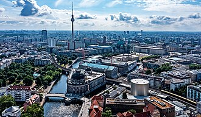
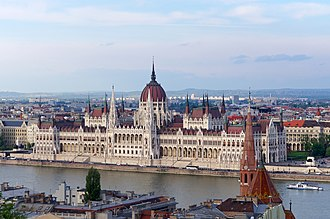

Európa tele van gyönyörű városokkal, történelmi emlékekkel és természeti csodákkal.
 Nézd meg például a European Best Destinations gyűjteményét!
| Város | Ország | Lakosság (millió) |
|---|---|---|
| Párizs | Franciaország | 2.1 |
| Róma | Olaszország | 2.8 |
| Barcelona | Spanyolország | 1.6 |
| Prága | Csehország/td> | 1.1 |